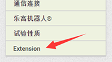
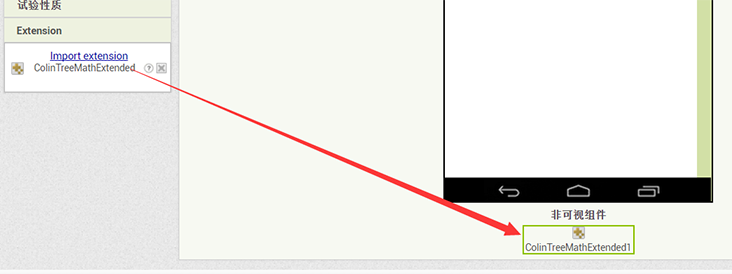

拓展使用方法
首先呢，找到下载好的.aix文件
下载的文件不是aix的话：
- 可以尝试双击文件，使用压缩包软件打开，里面通常就有一个aix文件
- 如果下载的时候使用的是IE 或者 Edge，尝试换一个浏览器如Chrome下载
- 还不行的话，直接在QQ向我要即可
aix文件需要作为一个整体上传，所以不需要再做任何操作，包括解压aix文件
接下来前往Appinventor（thunkable也是极其相近的操作）
打开需要导入拓展的项目
找到组件列表底部的Extension类别
单击展开列表

点击带下划线的import extenion
在弹出的小窗口中，单击选择文件，在文件管理器中选择文件上传并确认
一切就绪，接下来拓展组件就可以像普通组件一样使用啦
